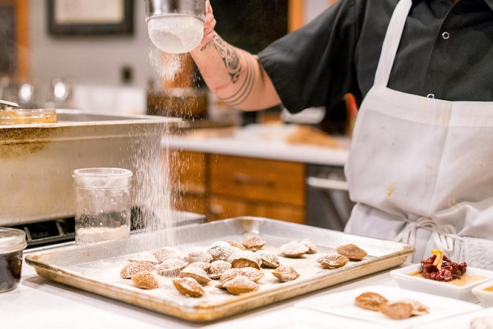

Ranking najlepszych deserów na świecie -
polskie ciasta w czołówce, ale wygrał jabłecznik
Świat kocha polskie desery. Sernik został uznany za jedno z najlepszych ciast na świecie w rankingu TasteAtlas, w ścisłej czołówce znalazły się też karpatka i sękacz. Zwycięzcą został jednak jabłecznik.
„Taste Atlas” to coraz popularniejsza internetowa baza tradycyjnych potraw regionalnych z całego świata, a także tradycyjnych restauracji. Jej twórcy wyspecjalizowali się w promowaniu tego, co lokalne. Dlatego w tym rankingu nie znajdziemy ani nowoczesnych, kosmopolitycznych restauracji, ani dań z gatunku fine dining. TasteAtlas nagradza lokalność i tradycję kulinarną.
Najwięcej emocji zazwyczaj budzi lista najlepszych tradycyjnych restauracji na świecie. Ale serwis przygotowuje też inne zestawienia. Jednym z nich jest ranking najlepszych na świecie ciast i deserów. W tym zestawieniu Polska okazała się potęgą. Aż trzy polskie ciasta znalazły się w pierwszej dziesiątce. Najwyżej - na drugiej pozycji - sernik. Jaki deser zwyciężył?
Ranking najlepszych ciast na świecie
Portal „Taste Atlas” powstał 2015 roku jako interaktywny przewodnik po tradycyjnych kuchniach i restauracjach całego świata. Stworzył go chorwacki dziennikarz Matija Babić. Obecnie w ciągle powiększającej się bazie znajdują się tysiące potraw, napojów, produktów, a także restauracji.
Oprócz ciągłego wzbogacania swojej bazy regionalnych potraw i napojów, „Taste Atlas” tworzy również rankingi — między innymi najlepszych kuchni, restauracji, potraw i napojów, a także deserów. Powstają one na bazie głosów samych użytkowników portalu. Mogą oni ocenić jakąś potrawę w skali od 1 do 5.
Redakcja portalu zaktualizowała właśnie swój ogólnoświatowy ranking stu najlepszych tradycyjnych wypieków. Polski sernik stanął na podium, zajmując drugą pozycję. Co ciekawe, ikoniczny sernik nowojorski, który można znaleźć również w wielu polskich cukierniach, znalazł się nieco niżej w rankingu — na miejscu 12.
Polscy cukiernicy mogą być z siebie dumni. Wysokie pozycje tradycyjnych polskich wypieków świadczą o tym, że pokochało je tysiące użytkowników z całego świata. Wśród najlepszych ciast na naszej planecie sernik zajął bardzo wysokie, drugie miejsce.
W pierwszej dziesiątce — oprócz sernika — znalazły się jeszcze dwa inne dobrze znane polskie ciasta. Sękacz (który jest bardzo popularny również na Litwie) zajął szóste miejsce. Z kolei na miejscu dziewiątym uplasowała się karpatka.
Polskich ciast nie zabrakło również na nieco dalszych pozycjach. Tuż za pierwszą dziesiątką — na miejscu 11. — znalazł się marcinek. Kilka pozycji dalej, na miejscu 14., uplasowała się kremówka. Piernik zajął miejsce 35., a śląski kołocz — 74. Na najbardziej odległej pozycji nr 82. pozycji w zestawieniu znalazła się natomiast wuzetka.
Tradycyjne polskie wypieki, które trafiły do pierwszej dziesiątki, znalazły się w bardzo ciekawym międzynarodowym towarzystwie. Oprócz sernika, marcinka i karpatki w gronie tym znalazł się amerykański jabłecznik, brazylijskie pavê, sernik japoński, szwedzkie kladdkaka, czeski valašský frgál i pastel de banano z Gwatemali.
Jabłecznik — najlepsze ciasto na świecie według „Taste Atlas”
Zaskakujący dla wielu może być fakt, że użytkownicy „Taste Atlas” za najlepsze ciasto na świecie uznali popularny w Stanach Zjednoczonych jabłecznik.
Apple pie składa się z co najmniej dwóch warstw ciasta kruchego, które otaczają soczyste nadzienie z kawałków jabłek. Jego początki znaleźć można w czternastowiecznej Anglii, od osiemnastego wieku pojawia się w Stanach Zjednoczonych - występuje w wielu krajach, w których rosną jabłka, w tym w Polsce. Jabłka są doprawione cynamonem, gałką muszkatołową i cukrem, co nadaje im aromatyczny, słodko-korzenny smak. Często na wierzchu układa się kratkę z ciasta, a po upieczeniu deser podaje się z lodami waniliowymi, bitą śmietaną lub serem.
Trzecie miejsce na podium zajęło ciasto pavê, czyli brazylijska odpowiedź na włoskie tiramisu. Ten wielowarstwowy deser nie wymaga pieczenia i przyrządza się go z pokruszonych herbatników, czekolady i kremu na bazie śmietany. Oczywiście podobnie jak w przypadku większości ciast, które znalazły się w zestawieniu, również i pavê ma wiele wersji — w zależności od inwencji domorosłego czy profesjonalnego cukiernika.
Najlepsze ciasta na świecie według „Taste Atlas”
- Jabłecznik (Stany Zjednoczone)
- Sernik (Polska)
- Pavê (Brazylia)
- Sernik japoński/bawełniany (Japonia)
- Kladdkaka (Szwecja)
- Sękacz (Polska)
- Valašský frgál (Czechy)
- Pastel de banano (Gwatemala)
- Karpatka (Polska)
- Chocotorta (Argentyna)